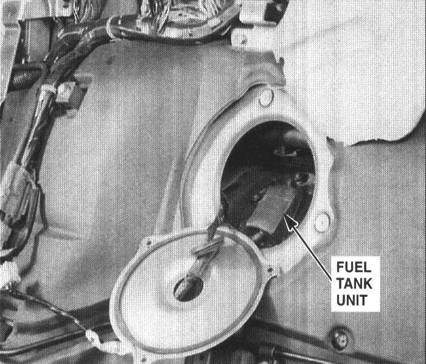

Operation CHARM
: Car repair manuals for everyone.
Home
>>
Acura
>>
1994
>>
NSX V6-3.0L DOHC
>>
Repair and Diagnosis
>>
Powertrain Management
>>
Fuel Delivery and Air Induction
>>
Fuel Tank Unit
>>
Locations
Fuel Tank Unit: Locations

Left Side Of Rear Bulkhead (Panel Removed)